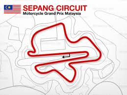

The time has come to fire up the four-stoke monsters once more as the first MotoGP test gets underway in Malaysia in just a few days time, with motogp.com bringing you comprehensive and exclusive coverage.
Following a two day set-up period, three of the CRT teams that are switching to the now-available Magneti Marelli ECU will have two days running on the Sepang circuit to test their new electronics on the 3rd and 4th of February, ahead of the rest of the grid joining them.
For this, Avintia Blusens, Hiroshi Aoyama and Hector Barbera will be joined by Came IodaRacing Projects Danilo Petrucci and Lucas Pesek, as well as NGM Mobile Forward Racings Colin Edwards and Claudio Corti.
Throughout the ECU test period, motogp.com will bring you full reports of the days activities, as well as mid-day and full-day video highlights of how the riders got on. In addition to this, we will be talking to MotoGP Director of Technology Corrado Cecchinelli about the introduction of the new electronics, as well as to Bridgestone about their new CRT-specific softer rear tyre.
Things will then hot up from the 5th, as the rest of the MotoGP premier-class grid joins the action to commence three days of testing that will give the first real indication of form ahead of this season. With Valentino Rossi back on the Yamaha, Marc Marquez jumping on the Repsol Honda, and Jorge Lorenzo and Dani Pedrosa finishing the season neck-and-neck, lap times will be relevant from the start. And with Ducati promising a new approach, and CRTs expected to up their game further, this pre-season is not one to miss.
motogp.com will ensure you stay informed throughout. Daily video highlight updates, as well a mid- and full-day report will keep you abreast of all the action, whilst our corner-view series will bring you the best shots of MotoGP riders back at full lean for 2013. Daily rider interviews, as well as additional technical features will keep you glued to the screen until the test finishes on the evening of Thursday the 7th. Daily track times will be from 10am to 6pm local time, which is 3am to 11am CET.